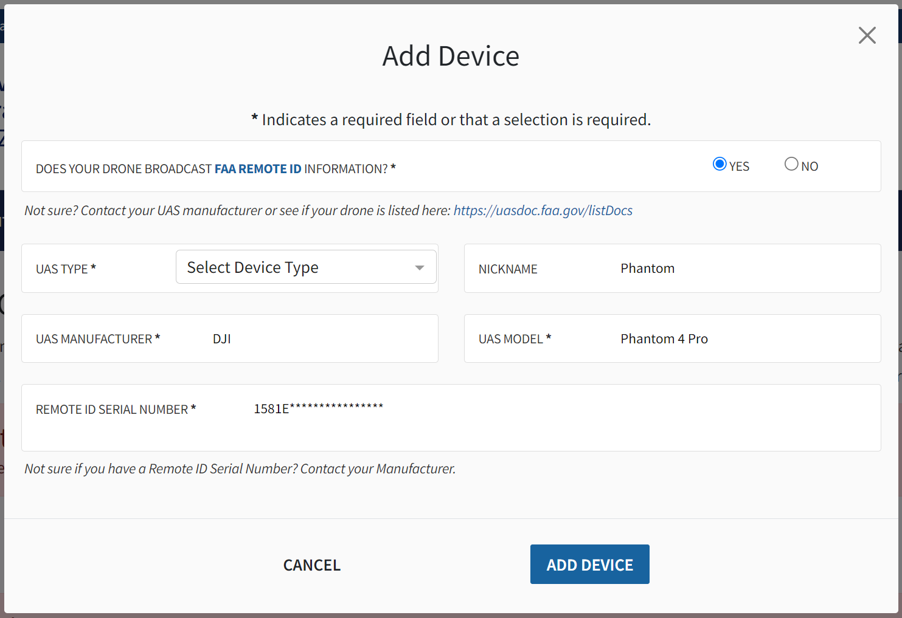
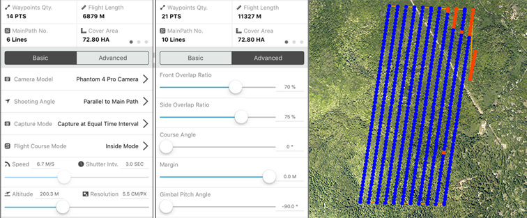
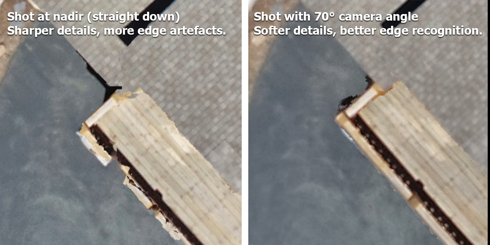
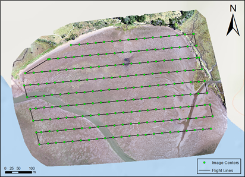

Research / Geospatial Education
Drone Mapping Course
A free, self-paced introduction to the complete drone mapping workflow, from safe flight operations and mission planning to image processing and GIS analysis.
Overview
This open-access course introduces the drone mapping workflow used in coastal management, habitat monitoring, and applied geospatial research. Participants learn how to plan safe missions, collect field imagery, document ground control, process imagery into mapping products, and analyze the results in a geographic information system (GIS).
The course draws on field methods used by GeoFly Lab and its collaborators in coastal, ecological, wildfire, and community resilience projects. Drones, also called uncrewed aircraft systems (UAS), provide high spatial resolution, flexible timing, and repeatable data collection across sites, which makes them valuable for seagrass monitoring, fire behavior and post-burn assessment, defensible-space evaluation, and many other environmental applications.
- Format
- Self-paced, open access, free
- Structure
- Five modules with downloadable guides and slides
- Audience
- Students, researchers, educators, and project partners
- Prerequisites
- None; basic GIS familiarity is helpful
- Example aircraft
- DJI Phantom 4 Pro (principles apply to other platforms)
- Software
- DJI GO 4, DJI GS Pro, ArcGIS Drone2Map, ArcGIS Pro
What you will learn
- Drone hardware, setup, calibration, maintenance, and field readiness.
- Manual flight: takeoff, landing, camera control, and emergency procedures.
- Safe mission planning under FAA rules, airspace restrictions, weather limits, and site hazards.
- Preparation for the FAA Part 107 Remote Pilot knowledge test.
- Autonomous mapping missions: altitude, overlap, flight direction, batteries, and camera settings.
- Collecting and documenting ground control points (GCPs).
- RTK and PPK workflows for better positional accuracy.
- Processing imagery into orthomosaics, surface models, and point clouds.
- Organizing and backing up imagery and derived data.
- GIS analysis of drone products: digitizing, vegetation indices, band math, and classification.
Course modules
- Drone basics
Aircraft, controller, batteries, software setup, calibration, and FAA registration.
- In-flight operation
Manual flight practice, pre-flight safety briefing, and Part 107 operating rules.
- Autonomous mapping
Mission design, overlap, ground sampling distance, and flight planning in DJI GS Pro.
- Image processing and GIS
Quality control, photogrammetry, georeferencing, data management, and GIS analysis.
- FAA Part 107 self-study
Eligibility, knowledge test topics, recurrent training, and study materials.
Research, teaching, and professional drone operations in the United States generally fall under FAA Part 107. Rules and FAA systems change over time, so always confirm current requirements on official FAA pages before flying. This course is a learning resource, not legal guidance.
Module 1Drone basics
Before operating a drone, participants should understand the aircraft, controller, batteries, sensors, software, and calibration procedures. This module uses the DJI Phantom 4 Pro as its example, but the same field-readiness principles apply to other mapping platforms. Flight planning and autonomous mapping are covered in later modules.
Before your first flight
- Read the Phantom 4 user manual.
- Review the basic controls, aircraft status indicators, battery care, camera settings, and emergency procedures.
- Read the operations manual and safety guidelines.
- Practice manual flight skills: takeoff, landing, altitude changes, positioning, camera control, and return-to-home.
Tutorial video
Registering your drone
In the United States, drones are registered through FAA DroneZone. All drones must be registered unless they weigh 0.55 pounds (250 grams) or less and are flown only under the Exception for Limited Recreational Operations. Research, teaching, and professional mapping flights should be registered and flown under Part 107; a drone registered under the recreational exception cannot be flown under Part 107.
Part 107 registration costs $5 per drone and is valid for three years. Every drone that is registered, or required to be registered, must comply with Remote ID. Label each drone with its registration number before flight, and carry the registration certificate (paper or digital) during operations.
Suggested registration steps:
- Visit the FAA drone registration page and open FAA DroneZone.
- Create or sign in to your FAA account.
- Select the drone owner and pilot service.
- Choose Part 107 as the operating category for research, teaching, or professional work.
- Enter the owner, aircraft make and model, and Remote ID serial number. DJI aircraft show the serial number in the flight app.
- Pay the registration fee and save the registration certificate.
- Label the aircraft with the FAA registration number before flight.
- Keep a copy of the certificate available during every operation.

Module materials
- Phantom 4 user manual (v1.6)PDF, 24 MB
- Operations manual and safety guidelinesPDF, 0.9 MB
Module 2In-flight operation
After reviewing the basics, we recommend a 1.5-hour manual flight session before any autonomous mapping mission. Practice takeoff, landing, aircraft orientation, altitude control, camera operation, emergency stops, and return-to-home behavior in an open, low-risk area.
Pre-flight safety briefing
Every mission has site-specific hazards, so careful planning is essential. Before launch, the remote pilot in command (PIC) should brief the team on the mission objective, airspace status, weather, takeoff and landing area, emergency procedures, communication plan, and each person's role. The list below covers elements common to most missions; plan each mission individually for its own hazards.
- Check the aircraft, controller, propellers, batteries, memory card, firmware, and payload.
- Bring the required safety equipment: eye protection, safety vests, traffic cones, radios, gloves, and life jackets when working near or on water.
- Confirm a stable link between the controller and the aircraft.
- Check the weather forecast before the mission and observe conditions again on site.
- Confirm airspace status, LAANC or other authorization, nearby airports, temporary flight restrictions (TFRs), and site rules.
- Keep the drone within visual line of sight and clear of people, vehicles, structures, wildlife, and other aircraft.
- For coastal missions from boats or tight launch sites, practice takeoff, landing, and hand-catching only under controlled conditions with trained personnel.
- The remote PIC has final authority over whether the mission proceeds.
Compass calibration
Compass calibration is sometimes required for correct navigation, for example after traveling to a new area or when the app prompts for it. Follow the on-screen instructions in the DJI GO 4 app, and calibrate away from metal objects, vehicles, and power lines. The official DJI calibration video in Module 1 shows the procedure.
Part 107 operating rules
The summary below is not exhaustive. Always confirm current requirements on the FAA website and follow the policies of your institution and site.
- Always yield to crewed aircraft, and never operate in a careless or reckless manner.
- Keep the drone within visual line of sight. When using first-person view (FPV), a visual observer must keep the drone in unaided sight (no binoculars).
- A person may act as pilot or visual observer for only one drone operation at a time.
- Do not fly over people who are not directly participating unless the operation meets the FAA operations over people requirements.
- Do not operate from a moving aircraft, or from a moving vehicle except over a sparsely populated area when not carrying property for compensation.
- Maximum altitude is 400 feet above ground level, or within 400 feet of a structure you are inspecting.
- Maximum ground speed is 100 mph (87 knots).
- Minimum visibility from the control station is 3 statute miles.
- Night and civil-twilight flights require anti-collision lighting visible for at least 3 statute miles and a remote pilot whose knowledge test or training meets the current FAA requirement.
- Class G airspace does not require air traffic control authorization. Controlled airspace (Class B, C, D, and the surface area of Class E around airports) requires prior authorization, which can often be requested through LAANC.
- Operations beyond visual line of sight, and some other operations, require a waiver or additional approval.
- Report to the FAA within 10 days any operation that causes serious injury, loss of consciousness, or more than $500 of damage to property other than the drone.
- Carry your remote pilot certificate and registration during operations, and make them available on request.
For airspace awareness, the FAA lists approved B4UFLY desktop and mobile providers. These tools help with situational awareness but do not replace the remote PIC's responsibility to verify airspace, authorizations, TFRs, weather, and site permission.
Regulations differ by country. In Canada, for example, Transport Canada rules for remotely piloted aircraft systems apply, and FAA certification does not substitute for Canadian authorization.
Module materials
- FAA Remote Pilot study guidePDF, 3.1 MB
Module 3Autonomous mapping
Autonomous mapping improves field efficiency and repeatability by flying a planned route and capturing images with consistent overlap. This module covers how to design missions that balance spatial resolution, coverage, battery limits, wind, sun angle, site geometry, and safety.

- Read the pre-flight planning document and review autopilot and safety procedures.
- Choose mission parameters that fit the site and the research question.
- Align flight lines with the long axis of the mapping area when practical, to reduce turns and save battery.
- Avoid rain, fog, low visibility, and wind beyond aircraft, site, or pilot limits. Coastal conditions change quickly, so make conservative weather decisions.
Planning decisions and settings
When you draw a flight area and adjust mapping parameters, the key decisions are:
- The size of the study area and the number of batteries available.
- Surface texture: uniform surfaces such as water, sand, and dense canopy need more front and side overlap.
- The trade-off between coverage and ground sampling distance (image resolution).
- Camera angle, exposure, and managing sun glint on water.
- Flight direction relative to site shape, wind, and the takeoff location.
- Front and side overlap, total flight time, and a battery reserve for a safe return.
| Parameter | 100 ft altitude | 400 ft altitude |
|---|---|---|
| Coverage | Smaller area | Larger area |
| Spatial resolution | Higher (finer detail) | Lower |
| Shooting angle | Parallel to the main flight path | |
| Capture mode | Equal distance interval, or hover and capture | |
| Shutter interval | 3 s | 3–5 s |
| Front overlap | 65–75% | 60–70% |
| Side overlap | 65–75% | 60–70% |
| Course angle | Parallel to the long side of the area | |
Estimating ground sampling distance
Ground sampling distance (GSD) is the ground size of one image pixel. It depends on flight altitude and the camera, and it sets the smallest feature you can map. Calculate it before choosing an altitude:
GSD (cm/pixel) = (sensor width × flight altitude × 100) ÷ (focal length × image width)
Here sensor width and focal length are in millimeters, altitude is in meters, and image width is in pixels. For the Phantom 4 Pro (13.2 mm sensor width, 8.8 mm focal length, 5,472-pixel image width) flying at 100 m (about 330 ft), GSD is about 2.7 cm per pixel. Halving the altitude halves the GSD but roughly quadruples the number of images needed to cover the same area.
Nadir and oblique imagery
Straight-down (nadir) images are best for 2D orthomosaics. Adding angled (oblique) images improves 3D reconstruction of structures, cliffs, and vegetation.

DJI GO 4 and DJI GS Pro support the Phantom 4 series used in this course. Newer aircraft use different flight and mission-planning apps, so check which software your aircraft supports before a field day.
Module materials
- Pre-flight planning documentPDF, 0.4 MB
Module 4Image processing and GIS
This module covers image quality control, photogrammetric processing, georeferencing, orthomosaic and elevation models, data management, and GIS analysis. Before processing, inspect every image and remove those that are blurry, overexposed, strongly oblique when a nadir mission was intended, or otherwise unsuitable. Careful quality control at this stage reduces error in the final products.

Image stitching
Photogrammetry software uses structure-from-motion and multi-view stereo methods to match features across overlapping images, estimate camera positions, build a point cloud, and produce georeferenced products. Typical outputs include orthomosaics, digital surface models (DSMs), digital terrain models (DTMs), 3D meshes, and point clouds.
This course uses Esri ArcGIS Drone2Map as its teaching platform. Other widely used tools include Pix4Dmapper, Agisoft Metashape, and the open-source OpenDroneMap (WebODM). Choose software based on project scale, licensing, computing resources, accuracy needs, and how it fits your GIS workflow.
- Read the Drone2Map user guide.
- Sample data are provided to course participants. Use software licensed through your institution or project.
Georeferencing and ground control
Coastal, wetland, and forest sites can be hard to map because water, vegetation, sand, and other uniform surfaces offer few stable features for image matching. Ground control points (GCPs) improve positional accuracy, and independent check points let you measure it.
- On land, use clearly visible targets such as survey panels, bright buckets, or traffic cones.
- In water or intertidal areas, use light-colored anchored buoys where they are safe and visible in the imagery.
- Distribute GCPs around the edges and through the interior of the mapping area, and add independent check points when possible.
- Let the GNSS receiver stabilize, record the coordinate reference system and metadata, and repeat measurements when appropriate.
Accuracy depends on equipment, correction method, satellite geometry, multipath, canopy, terrain, weather, and field procedure. Real-time kinematic (RTK) and post-processed kinematic (PPK) workflows can substantially improve accuracy when configured correctly.
Organizing and backing up data
A single mapping day can produce thousands of images. Consistent organization makes processing reproducible and protects data that cannot be collected again.
- Use one folder per site and flight date, for example
SiteName_YYYY-MM-DD_Flight01, with separate subfolders for raw images, GCP data, processing projects, and final products. - Record flight metadata: pilot, aircraft, altitude, overlap, weather, tide stage, and any issues.
- Copy memory cards on the same day, and keep at least three copies on two kinds of storage, with one stored off site (the 3-2-1 rule).
- Never edit raw images; keep processed outputs separate and documented.
- Follow the FAIR principles (Wilkinson et al., 2016) so data are findable, accessible, interoperable, and reusable.
Orthomosaics, elevation data, and GIS analysis
Study the ArcGIS-based image analysis manual. GIS analysis of drone products includes geodatabase management, digitizing, raster analysis, pixel-based and object-based classification, band math, vegetation indices such as the Green Leaf Index and NDVI, and accuracy assessment. ArcGIS and Drone2Map are available from Esri, subject to institutional licensing.
Drone mapping also produces elevation products such as DSMs and DTMs, which support topographic analysis, vegetation structure, erosion monitoring, 3D visualization, and change detection.
Module materials
Module 5FAA Part 107 self-study
To fly under the FAA Small UAS Rule (Part 107), a first-time remote pilot must pass the Unmanned Aircraft General – Small (UAG) knowledge test at an FAA-approved testing center. The FAA requires applicants to be at least 16 years old; able to read, speak, write, and understand English; and in a physical and mental condition to fly safely.
The test covers airspace classification, operating requirements, flight restrictions, aviation weather, loading and performance, emergency procedures, crew resource management, radio communication, airport operations, night operations, maintenance, and preflight inspection. Certificate holders must complete the free online recurrent training every 24 calendar months to stay current.
We recommend reviewing the FAA Remote Pilot study guide, working through practice questions, reading sectional charts, and completing scenario-based planning exercises before scheduling the test. Details are on the FAA page Become a certificated remote pilot.
Module materials
- FAA Remote Pilot study guidePDF, 3.1 MB
- Self-study guide for the FAA Part 107 examPDF, 0.7 MB
- Course lecture slidesPDF, 7.4 MB
The self-study guide reviews course content and additional test topics, including airspace, weather sources, radio communication, sectional charts, loading and performance, and sample questions.
Before-flight checklist
- The drone is registered, labeled, Remote ID compliant, and suitable for the planned operation.
- The remote PIC holds a current certificate, is current on recurrent training, and has any authorization the mission needs.
- Airspace, LAANC needs, TFRs, local restrictions, landowner permission, and nearby hazards are checked with official FAA resources and approved providers.
- Flight and mission-planning apps are installed and tested before the field day.
- Flight batteries, controller, tablet, GNSS receivers, radios, phones, and power banks are charged.
- Memory cards are formatted and tested, with enough storage, and camera settings match the mission plan.
- Propellers, motors, landing gear, payloads, cables, and the airframe are inspected.
- Weather is checked: wind, gusts, precipitation, fog, visibility, temperature, tides where relevant, and expected changes.
- A safe takeoff and landing area with line of sight to the mapping area is selected.
- A short test flight confirms aircraft behavior, GPS status, camera triggering, and return-to-home settings.
- During autonomous mapping, the camera is capturing at the expected interval. If it is not, stop the mission and troubleshoot.
Glossary
- AGL
- Above ground level; the height of the aircraft above the terrain directly below it.
- DSM / DTM
- Digital surface model (top of vegetation and structures) and digital terrain model (bare ground).
- GCP
- Ground control point; a surveyed target visible in the imagery, used to georeference the map.
- GSD
- Ground sampling distance; the ground size of one image pixel.
- LAANC
- Low Altitude Authorization and Notification Capability; the FAA system for near-real-time airspace authorization.
- Orthomosaic
- A single geometrically corrected image stitched from many overlapping photos.
- Overlap (front and side)
- The share of each image that overlaps the next image along a flight line (front) and the neighboring line (side).
- Remote ID
- A broadcast of a drone's identity and location that the FAA requires for registered drones.
- Remote PIC
- Remote pilot in command; the certificated pilot with final authority over the flight.
- RTK / PPK
- Real-time kinematic and post-processed kinematic GNSS correction, which improve positional accuracy.
- TFR
- Temporary flight restriction; short-term airspace limits for events, emergencies, or wildfires.
- VLOS
- Visual line of sight; keeping the aircraft visible to the pilot or visual observer without aids.
Resources
FAA
Software and training
- ArcGIS Drone2Map
- Esri training, including courses on getting started with Drone2Map and creating 2D and 3D products
- OpenDroneMap (open source)
Related projects
Cite this course
The course builds on the training program described in:
Yang, B., Hawthorne, T. L., Hessing-Lewis, M., Duffy, E. J., Reshitnyk, L. Y., Feinman, M., & Searson, H. (2020). Developing an introductory UAV/drone mapping training program for seagrass monitoring and research. Drones, 4(4), 70. https://doi.org/10.3390/drones4040070
Questions about the course? Contact GeoFly Lab.